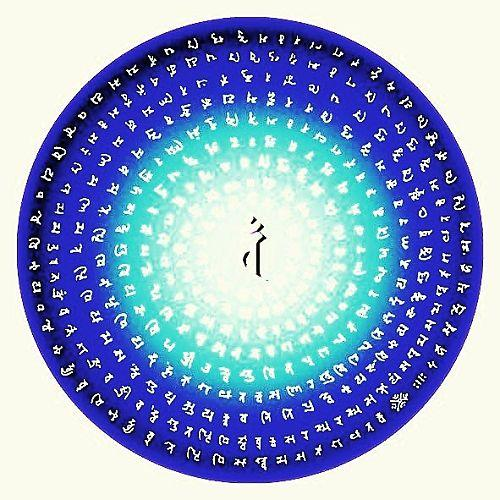

這時，閻摩羅法王在入夜的時候來到佛的住所，首先以種種天衣、妙花、塗香，莊嚴的供養，接著繞佛三匝，五體投地，行接足的大禮，然後合掌說：“我聽說佛陀演說、讚嘆奉持這個陀羅尼，所以我前來修學。如果有受持這個大力陀羅尼的眾生，我都會常隨守護，不會讓他們墮入地獄。只要他們能夠遵循佛陀的言教，所以我就會護念他們。”
在這個時候，護世的四天王也從座而起，繞佛三匝，而恭敬祈請說：“唯願如來為我們詳說持誦這個陀羅尼的方法。”
佛陀立刻為四大天王開示說：“你們現在仔細聽著，我為你們宣說受持這個陀羅尼的方法，亦是為短壽的眾生宣說。在持誦這個陀羅尼之前，首先就應該齋戒沐浴，穿著新的潔凈衣服，然後在每個月中的月圓之夜，持誦這個佛頂尊勝陀羅尼一千遍。這樣做，就會使短命的眾生，增長壽命，永遠不會有病苦，一切業障都會消滅，一切地獄的各種痛苦亦可獲得解脫，一切飛禽走獸和含靈之類，得聞這個陀羅尼，一入耳根，盡了這個報身之後，就不會再受這種穢惡的身相。”
佛陀又繼續開示說：“如果有人患了嚴重的惡病，能夠聽到這個陀羅尼神咒，就能夠永離一切病痛，亦得消滅應墮惡道的罪業，命終之後就會轉生於寂靜的世界。從當生之後，就不會再受胎生；他所生的地方都是由蓮花所化生，無論轉生到哪裏，都能夠記憶這個陀羅尼，不會遺忘，而且這個人會常知宿命。
如果有人已做了種種極重的惡業，在他命終後，由於惡業的緣故應該墮入地獄或者墮入畜生道，或者餓鬼，以至墮入無間地獄，長劫受苦，或者生於水族，或淪為禽獸異類的身體，如果有人用亡者部分的身骨，用一把泥土，誦念這個陀羅尼二十一遍，然後將泥土撒在亡者的骨上，這樣，亡者就會因為這個神咒真言加庇的力量，立刻就會往生天界。”
佛陀又說：“如果有人能夠每日誦念這個陀羅尼21遍，就能夠消受一切世間的廣大供養。捨報之後，就能夠往生到阿彌陀佛的極樂世界。如果能夠時常誦念，也能夠得到大涅槃，也能夠延年益壽，享受最為殊勝的快樂。捨棄當生報身後，就能夠往生到各種微妙的佛國，親近諸佛。一切如來亦都為持誦修學這個法門的人，演說微妙的法義；一切世尊都會為這些受持者授記，身光照耀一切國土。”
佛陀又說：“如果要持誦這個陀羅尼，首先就在佛前，取清凈乾淨的泥土，依泥土的大小，作一個四方形的壇城，以各種草花撒於壇上，亦都燒各種名香，右膝要著地胡跪，心常念佛，手結陀羅尼印，即是尊勝陀羅尼的手印。手印，就是屈頭指，以大拇指按住，合掌置於胸口之前。口誦這個陀羅尼108遍之後，在壇中就如雲王雨花一樣，這樣普遍供養八十八俱胝恒河沙數無量諸佛菩薩。這樣，這些佛陀就會同聲讚嘆：‘善哉！稀有！真是佛子。’在這個時候，就會同時得證無障礙智三昧，得證大菩提心莊嚴三昧；持誦這個陀羅尼神咒的方法，大致就是這樣。”
佛陀又咐囑天帝說：“我這個方便道，能夠令一切應墮入地獄的眾生獲得解脫，令一切惡道轉為清淨，亦能夠令持誦的眾生延年益壽。天帝，你將我這個陀羅尼帶回去，教授善住天子，叫他如法持誦，這樣，在七日之後，你與善住天子再一齊來見我。”
當時，天帝就在世尊之前，尊敬受持這個陀羅尼法，就奉持回到自己的天宮，依照佛陀的吩咐，便傳授給善住天子。善住天子敬受了這個陀羅尼後，就立即依法持誦。剛滿六日六夜，就能夠滿足一切的願望；天壽原本應該盡了將墮落於一切惡道，輾轉受種種的大苦，因為持誦這個陀羅尼的緣故，已經得到解脫，能夠安住於菩提道中，增壽無量，所以就無限歡喜。天帝就遵照佛陀的慈命與善住天子及其他天眾，奉持著花鬘、塗香、末香、寶藏、幡蓋、天衣、瓔珞等微妙的莊嚴，來到佛陀的處所，供養世尊，又恭敬繞世尊百千匝，然後歡喜踴躍，嚴肅地坐在佛陀的前面，聽佛陀說法。
當時世尊，伸出金色手臂，摩著善住天子的頭頂，為他說法之外，又為他授菩提記，而且吩咐他說：“這部經，名為凈一切惡道佛頂尊勝陀羅尼經。你應當受持。”這樣，當時大會的聽眾，聽佛陀所說的法，都皆大歡喜，信受奉行。